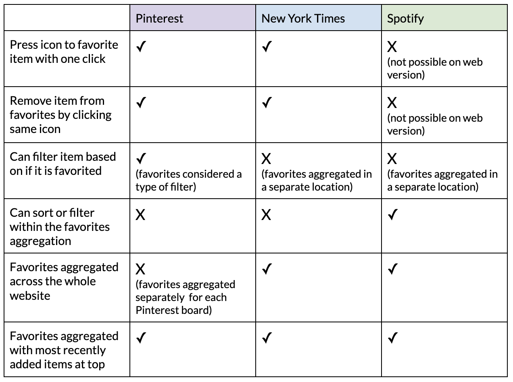

Development Assignment
Overview
In this assignment, I conducted a competitive analysis comparing websites with different favoriting functionality, which formed the foundation of my own implementaiton of an aggregator. I used React to build an interactive music interface with filter, sort and aggregation capabilities.
Competitive Analysis
The competitive analysis examines favoriting functionality in Pinterest, the New York Times and Spotify. These websites are linked below, and the red annotations highlight how one can favorite and unfavorite an element as well as how the favorites are displayed for each website.


Competitive Comparison Chart
Using a bookmark or heart icon to add items to favorites proved highly effective because this metaphor made the icon's purpose easily understandable to users. In addition showing outlined or filled-in icons based on whether the item was in the favorites list was successful becuase it indicated clickability and visually conveyed favoriting status to users. Having the word "favorite" appear upon hover, as seen in Pinterest, was also beneficial from an accessibility standpoint as it provided two ways to communicate the button's purpose (visual and textual). Furthermore, ensuring the icon was always visible to indicate liked items, as done in Spotify, made the website glanceable. On the other hand, Pinterest and the New York Times websites were more time-consuming to use because users had to click into each item to determine its favoriting status when not viewing the aggregated list. Another unsuccessful aspect was Pinterest using favorites as a filter instead of having a separate location for the aggregator. This approach made it challenging to find favorites because it was more intuitive to expect them to be aggregated across the entire website.
Takeaways
Drawing inspiration from my competitive analysis, the features that I will attempt to implement include:
- An icon next to every element that adds the element to the favorites list when clicked and removes the element from the favorites list when clicked again
- Icon visually filled in when the element is in the favorites list and outlined when the element is not in the favorites list
- Order of songs in aggregator based on when they were liked, with the most recently liked songs at the top
Implementation
The theme of my app is music, and it allows users to explore global top songs. Users can filter songs by length (minutes) and genre, and sort them by release date. Additionally, users can like songs by clicking the heart icon. Liked songs are displayed in the Liked Songs section of the interface, and the total count of liked songs is also updated accordingly.

Access my app here! This project was my first time using React to build an interface with filtering and sorting, and I now feel like I have a stronger understanding of components and states in React. I'm excited to use React again in future projects!